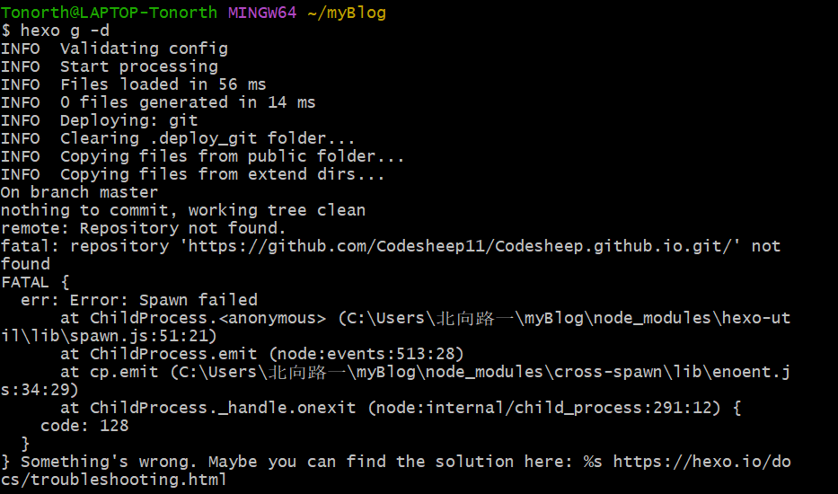

前言
搭建本博客时主要参考了 6 系师兄的搭建教程指路
本文主要是对师兄的教程作出了一些个人补充
（笔者当时理解不透弄错而走了很久的弯路，想要补充分享更傻瓜式的搭建过程）
同时，笔者能力有限，本文还有许多不足，希望大家看到后能够指导一下笔者。
注: 本文不涉及hexo、npm、git等基础知识的介绍，谷歌或百度自主搜索关键词即可得到相关信息
通过本文
你能得到一些上述博客未曾提到的细节问题和一个博客搭建历程建议
但无法实现博客更多细节的美化和获得相关知识的科普
假如搭建过程遇到了其他难题，推荐学会利用谷歌搜索
博客搭建顺序建议
对于尝试建立过 github 博客且已建立 github.io 库的读者
- 在对应的 github.io 库中的settings中将branches 名称从 main 修改成 master
- 阅读通用建议
对于未建立过 github 库，没有尝试过建立博客的读者
- 阅读hexo+Github Pages 搭建教程并完成所有步骤
注：该教程中的 hexo init myBlog 和 cd myBlog 操作笔者是用 hexo init blog 和 cd blog 实现的。（只是改了个名字） - 阅读通用建议
通用建议
假如你不想遇到奇奇怪怪的 error 提醒，小白最好先不要进行其他配置文件的修改。。
1、按照snail 主题官方仓库的 README 教程进行到到 Configuration
教程前面提到的的建立hexo init blog和cd blog大家已经实现了！只需要在blog文件夹中右键 git bash here就可以了
2、跳到修改本地_config 中 Deployment 的配置信息
原配置信息
1 | # Deployment |
配置后信息
1 | # Deployment |
请注意
- 这里 coding 是指腾讯的CODING DevOps
需要读者在免费注册使用后在项目中创建 DevOps 项目并进行选择克隆 https 复制地址信息 我的 github 库地址是利用 ssh 克隆的代码库仓库（电脑之前配置了 github 的 ssh）
但我的 coding 库地址是利用 https 克隆的代码库仓库
（按照上述步骤搭建的你理应也是这样）这里涉及到电脑设置多个ssh key的问题 若读者感兴趣可以谷歌搜索自行了解 笔者为了减少工作量并没有做这一步 这学期也不再需要换多个ssh了，下学期可能会进行研究并写分享博客 假如你使用https克隆，那么在hexo d一步中将需要输入账号密码。 假如利用ssh密钥克隆，那么要提前在库中实现ssh key绑定
3、在 blog 中 git bash here 再利用指令完成博客的搭建与上传
主要利用以下三条指令（上附教程中有讲到是干什么的）
hexo g
hexo s
hexo d
至于下面这种上传方式，我一般在不打算浏览本地网站的时候用
hexo clean
hexo g -d
注意：这里有的同学会出现这种情况

这里大家要注意这种情况我们看的不是 Error：Spawn Failed 这一行，而是往上看可以看到一行 remote：Repository not found
这里说了我们找不到这个仓库，这种问题的出现，很大可能是因为有的同学的 ssh 在部分课程修改后没有改回来。重新设置一遍 github 的 ssh 就能解决这个问题！
阅读到这里，你就可以在自己的 Github Pages 相关网址中看到属于自己的博客网站啦！
辣么，快去试试看吧！
笔者在博客美化中做出的修改建议
修改前的建议
备份 blog 文件夹
可以选择 git 或者本地备份
反正一定要备份！！！（一个下午和一个晚上血和泪的教训）
笔者做出的相关修改
这里仅涉及官方仓库教程中没提到或者不容易找到的
且笔者修改过的
blog_config.yml
- 大部分内容
根据官方仓库教程修改就可以，官方仓库没提到的大部分都是其他配置信息，需要读者额外了解
笔者主要将不需要的内容注释掉或修改成 enable: false
这里每个人审美不同，可以自由发挥
通过单词词义理解一下或者尝试一下不会遇到太大问题，出现问题恢复原来的就行了 - URL
请不要修改！！！
hexo 官方教程中是要修改这里的。。但是小白别碰就行了。
笔者目前也没有弄懂原理。但是不修改就不会出现问题，修改后会报错。这里卡了笔者很久 - comment（评论系统）
按该教程走就好了
但是我报错咧 不清楚。
blog\source
这里可以修改导航页（也就是右上角），点进去文件夹修改index就会知道怎么修改了。不需要的就选择删除。
blog\themes\snail\layout_partial\footer.ejs
在这里可以将页面低端的powered by内容和star的链接改成自己的github账号信息
但笔者由于喜欢更简洁的页面，关掉了底部的转发功能。该文件中其他信息笔者并没有修改。若有需要，请读者自行修改地址、名称等信息。
修改片段前
1 | <p class="copyright text-muted"> |
修改片段后（读者只需自行比对便可理解）
1 | <p class="copyright text-muted"> |
04 结语
- 由于笔者知识量有限，上文必定有不够完善的地方，希望大家理解。假如有所错漏，希望大家联系我修改，以免误导他人。
且笔者正在被流水线 CPU CPU（CPU 完了，来补充博客了！！）
目前得先安排时间去完成流水线 CPU 的代码编写和调试，博客内容的更多修改和搜寻上文笔者不懂的知识点等计划都得搁浅了。包括但不限于：
- 博客评论区的完善和探索(√) 教程指路
gitment报错弄不好，改用livere了。还可以微信登录。注意这里的网址应该是livere.com。他那个me后缀的我打不开。注意这里不能用UA码了，准备停用了，请在谷歌分析中采取手动添加的方法。在head那里添加即可。 以及在指路3会发现挺多东西需要改的，不然sitemap生成不对。- 博客文章右边目录的错误显示(√)
正确使用###，本文章错的地方没改本文章在笔者后续了解后会持续更新内容！
笔者能力有限，如有错漏，恳请读者谅解